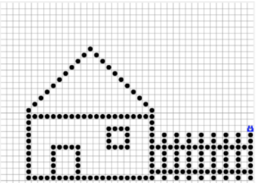

Alakzatok kirakása
Ez hasonlított kicsit a logomozaikra. Nem tetszett, hogy nem lehet egyszerre menni és lépni. Amikor már sikerült újta megtanulni merre van a jobb és a bal oldal, onnan (majdnem) minden simán ment. Igaz eleinte sokáig kellett várni, amíg a karesz lerajzolta a nehezebb alakzatokat (pl. ház). Végül amikor már felgyorsult akkor minden sokkal átláthatóbb lett.
